Instalación y configuración del Servidor DHCP
💥 Paso 1
Se parte desde la máquina virtual instalada y configurada. En este caso, se hace uso de una máquina virtual de Ubuntu Server para la configuración del Servidor Web.
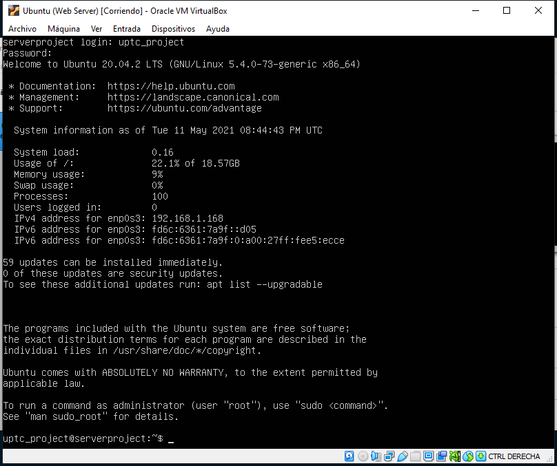💥 Paso 2
Desde este punto, se instalan las herramientas
necesarias para la configuración del Servidor Web.
Node.js como
framework de entorno de ejecución para JavaScript, Git para acceder al código del Servidor
configurado en un repositorio y npm como gestor de
paquetes de
node, el cual será utilizado para la instalación de dependencias de nodejs.
Para ello, se hace uso de los siguientes comandos: sudo apt install nodejs
para la instalación de nodejs, sudo apt-get install
git-all para Git y sudo apt install npm para
npm
⭕ Node:
Verificación de versión de node
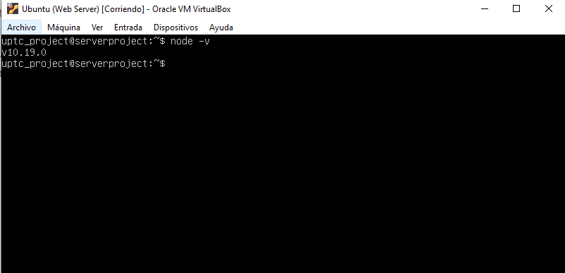⭕ Git
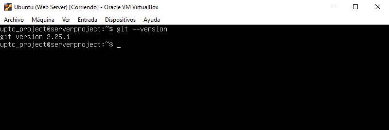⭕ npm
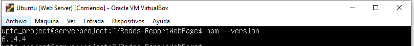💥 Paso 3: Configuración del servidor web
Para configurar y ejecutar el servidor web, se crea
una carpeta o directorio donde se alojarán los archivos necesarios para su
configuración.
Y desde este directorio, se ejecuta el comando npm init -y, que da inicio
a un archivo package.json donde podremos configurar dependencias del
servidor.
Cabe aclarar que el servidor puede ser codificado en una máquina física, puesto que la
virtual solo es una línea de comandos y sería más dfícil su codificación, y luego
subirla a un repositorio github que será clonado en la máquina virtual y ejecutado desde
allí.
💥 Paso 4: Instalación de dependencias
Teniendo el archivo package.json
podemos proceder a instalar las dependencias necesarias para la configuración del
Servidor Web. En este caso la dependencia utilizada sera Express, que actúa como infraestructura de
aplicaciones web para Node.js.
Lo hacemos mediante el comando npm install --save expres
Si navegamos por el directorio del proyecto, veremos una carpeta node_modules y un archivo package-lock.json. Estos archivos son los necesarios para la configuración de dependencias y modulos de node.
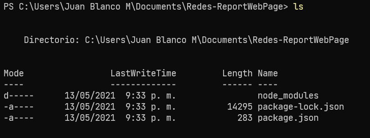💥 Paso 5: Codificación del servidor
Para este fin utilizaremos el editor de código
VSCode. Por lo tanto, abrimos la carpeta del proyecto en el respectivo editor.
Una vez en el editor, debemos crear un archivo index.js
En este archivo, escribiremos el código necesario para correr el servidor. Con fin de probarlo, haremos el típico ejemplo Hola Mundo y probaremos el servidor en la máquina local.
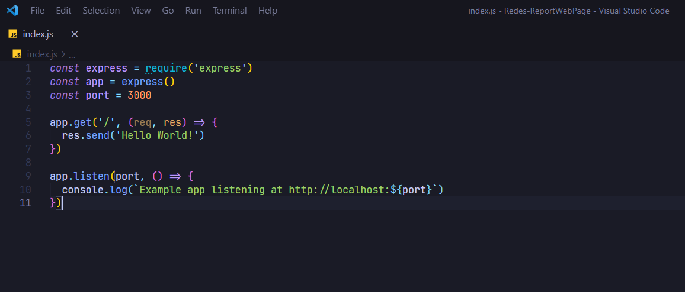Luego de tener el código, pondremos a ejecutar el servidor con el comando node index.js
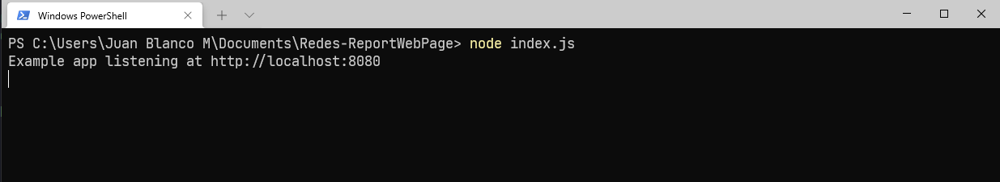Como podemos ver la consola nos indica que el servidor está corriendo en la dirección localhost:3000, si consultamos dicha dirección en el navegador, obtendremos como respuesta:
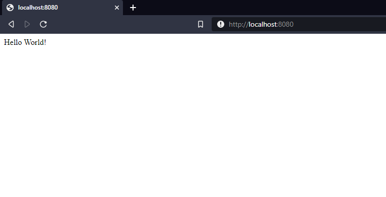De esta manera, vemos como nuestro Servidor Web está siendo ejecutado correctamente.
💥 Paso 6: Ejecución del servidor en máquina virtual
Una vez que vimos como el servidor web está siendo ejecutado en la máquina local, haremos su ejecución en una máquina virtual para ser consultado desde un cliente virtualizado. Para ello, haremos uso de la herramienta Github donde se encuentra almacenada la carpeta del proyecto y donde a su vez está montada la página web que presenta el informe del mismo. Por lo tanto, ejecutamos el comando git clone url_repositorio. En el campo url_repositorio ubicamos la URL del repositorio donde se aloja la configuración.
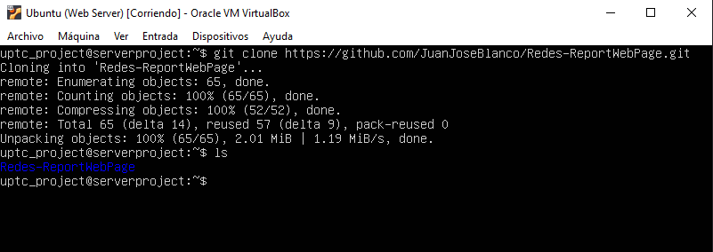El directorio Redes-ReportWebPage contiene la información del servidor y páginas web creados.
Posterior a la ejecución puntual, la máquina virtual debe conocer las dependencias que se usaron para la creación del servidor. Para ello, desde la raíz del proyecto, ejecutamos el comando npm install que se encarga de instalar las dependencias alojadas en el archivo package.json
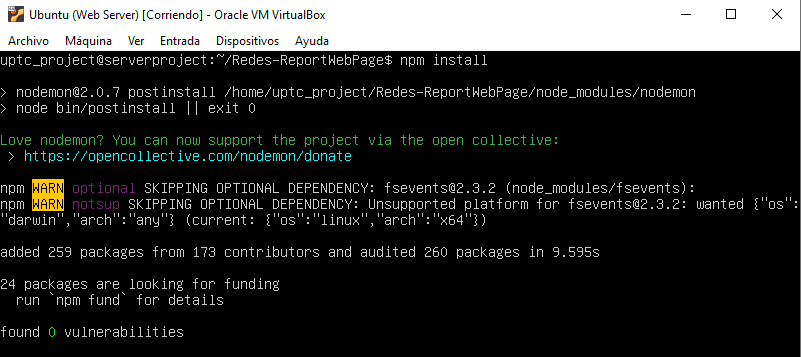A su vez, necesitamos conocer la dirección IP de la máquina en la que está corriendo el servidor para poder acceder a el desde una máquina externa. Para ello, ejecutamos el comando ifconfig. En caso tal de que nuestra máquina no cuente con el comando, podemos instalarlo mediante sudo apt install net-tools
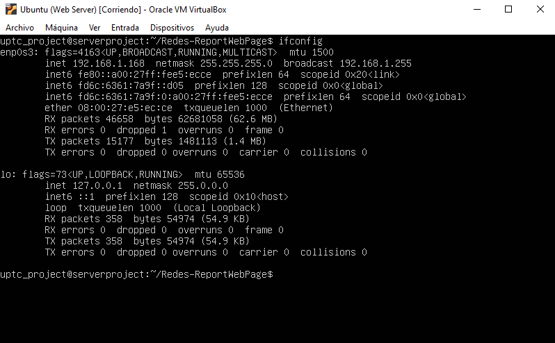Allí, se aprecia que la dirección IP de nuestra
máquina virtual es 192.168.1.168.
El servidor será ejecutado mediante un comando que
fue especificado en el archivo package.json y es npm run start.

De esta manera, nuestro servidor web está corriendo
y listo para ser consultado desde el navegador de un cliente, consultando
192.168.1.168.